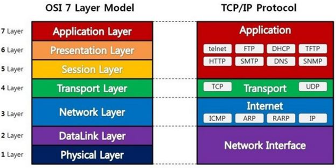

OSI 참조모델
컴퓨팅 장치, 네트워킹 장치에는 하나의 통일된 규격이 있습니다. 지금 읽고 계시는 OSI 7계층이 그러한 규격인데요
통신을 하는데 왜이런 규격이 필요할까요?
표준의 필요성
표준이 필요한 이유는 일상에서도 발견할 수 있습니다. 예를들어 A4용지의 크기는 국제표준화기구(ISO)에 의해 정해져있는데요
A4용지의 크기가 정해져있으니 프린터기의 종류가 다르더라도 같은 출력물을 낼 수 있습니다.
통신장치 또한 A4용지가 어딜가든 같은 크기인 것 처럼 장치마다 같은 규칙을 같고 있습니다.
통신을 하기위한 장치가 각각의 회사마다 표준이 다르다면 특정 회사의 제품은 다른 회사의 제품과 통신이 불가능합니다.
이렇듯 호환성 문제를 해결하기 위해서는 모든 통신장치가 규격화된 표준을 따라야 합니다.
OSI 7계층
통신이 일어나는 과정을 7가지로 분류한 것으로 통신이 일어나는 과정을 단계별로 파악할 수 있습니다. 각계층은 독립적이므로 특정한 계층에 이상이 생기면 그 계층만 고치면 되는 특징이 있습니다. 아래 표는 이러한 7계층이 어떻게 생겼는지 정리하고 있습니다.
| 상위계층 | 7 | 응용계층 | 사용자에게 보이는 부분으로써 사용자와 직접적인 상호작용을 하는 프로그램들을 말한다. ex) chrom, firefox, etc |
|---|---|---|---|
| 6 | 표현계층 | 시스템이 저마다 다른 데이터 표현방식을 사용하는데, 이를 통일된 구문 형식으로 변형시키는 작업을 한다. 암호화, 압축, 코드변환, 파일변환 등의 기능을 | |
| 5 | 세션계층 | 응용프로그램 간에 대화를 유지하기 위한 구조를 제공한다. 즉 프로세스 간에 세션(논리적인 연결)을 생성, 유지, 종료하는데 필요한 기능을 제공한다. | |
| 하위계층 | 4 | 전송계층 | 데이터의 전달을 두 호스트간의 통신이 아닌 응용 프로세스 간의 통신으로 바꾸어준다. 상위, 하위 계층에서 사용하는 제어방법 및 내용에 관계없이 경로선택에 관여하지 않고 투명한 데이터를 전송 할 수 있도록 기능을 지원한다. |
| 3 | 네트워크계층 | 발신지에서 착신지까지 패킷의 경로를 제어한다. 단말기, 컴퓨터가 어떤 네트워크에 접속되어 있을때 송신하고자 하는 정보가 어떻게 상대방 수신측까지 전달되는 경로를 제어한다. 이를 라우팅이라고 한다. | |
| 2 | 데이터링크계층 | 잡음이 있는 물리적인 회선을 상위 계층이 사용할 수 있도록 에러가 없게끔 변환시키는 계층. 1계층의 물리전송 매체의 특징상 오류와 잡음이 랜덤하게 발생하는데 그러한 오류와 잡음을 검출하고 수정한다. 전송할 데이터를 전송단위인 패킷으로 그룹화 시킨다. | |
| 1 | 물리계층 | 비트 단위 위주의 송수신을 하고 비트 전송을 위한 물리적인 수단을 제공하는 계층. 전기적 신호 규격을 정의하는데 이는 전송속도, 신호의 레벨 등을 정의하는 것이다. |